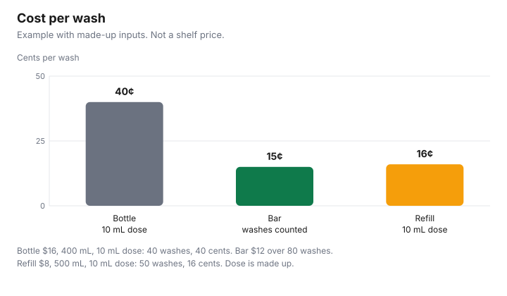

Personal Care · Canada
Shampoo Bars, Refills and Concentrates: Do They Really Cost Less per Wash?
For Canadian shoppers, a shampoo bar, refill or concentrate costs less per wash only when price divided by the washes you actually get beats your bottle. In this guide’s made-up example, a $16 bottle at 10 mL a wash is 40 cents, a $12 bar over 80 washes is 15 cents, and an $8 500 mL refill is 16 cents. A shampoo bar can look expensive next to a bottle on sale, and a refill pouch can look cheap until you notice how little is in it. Neither sticker is the cost of washing your hair. The cost per wash is the price divided by the washes you will actually get. This page is that division for a bottle, a bar, a refill, and a concentrate. The dose is the amount you measure, not a figure borrowed from an advertisement. This guide quotes no retailer price. Nothing here ranks a brand.
Key takeaways
- Bottle or refill: price ÷ (millilitres ÷ your dose). Bar: price ÷ washes you count. Concentrate: dilute as the label says, then use the same dose.
- Example with made-up inputs: a $16 bottle at 10 mL a wash is 40 cents. A $12 bar over 80 washes is 15 cents. An $8 refill of 500 mL at 10 mL is 16 cents.
- Shampoos are tariff item 3305.10.00 in the 2026 Customs Tariff, at 6.5 percent most-favoured-nation and free under the United States Tariff treatment. That item is not in the surtax order checked 29 Sep 2026. Whether your bottle is classified as 3305.10 or as 3305.90: check with CBSA (1-800-461-9999) or your carrier.
- A refill store is cheaper only when the price per wash of what you take home is lower. No refill-store price is cited here.
- Keep a bar dry between uses. Product that dissolves in the dish is not a wash.
Cost per wash method
Start with a bottle, because the label already gives you millilitres. Health Canada’s cosmetic labelling rules require a metric net quantity, so the denominator begins as a number you can read, not a guess about the height of the bottle.
The missing number is the dose. Pump once into a spare measuring spoon, or mark a small cup, on a normal wash. If you use two pumps, the dose is two pumps. Divide millilitres by that dose. That is the wash count if you finish the bottle. Divide the price you pay by the wash count. Price per 100 mL, the habit on the unit-price guide, is the check that the bottle is honestly sized. Cost per wash is the check that includes how much you pour.
A bar has no millilitres that matter once it is solid. Divide the price by the number of washes you get from one bar. Count them. A tick on a card in the shower is enough. The first bar is the measurement. Later bars use that count until your hair length or the product changes. A concentrate adds one step before the dose: mix it the way the label prints, then measure the dose on the diluted product, not on the concentrate straight from the bottle, unless the label tells you to apply it straight. If the label is silent on dilution, do not invent a ratio. Use it as sold, or leave it. The toiletries price-check sheet is where you can park the four-banner comparison once you have a dose.
| Form | Division | Example with made-up inputs |
|---|---|---|
| Bottle | Price ÷ (mL ÷ dose) | $16, 400 mL, 10 mL dose, 40 washes, 40 cents |
| Bar | Price ÷ washes you count | $12 over 80 washes, 15 cents |
| Refill or pouch | Price ÷ mL, then the same dose | $8, 500 mL, 10 mL dose, 50 washes, 16 cents |
| Concentrate | Follow the label’s dilution, then dose the mix | No made-up ratio. If your label is silent, do not invent one. |
Bars vs bottles
The bar’s sticker is often higher than a small bottle and lower than a club bottle. That comparison is the wrong one.
In the example with made-up inputs, the $12 bar is 15 cents a wash and the $16 bottle is 40 cents, so the bar wins inside the example. Change the bar to 30 washes, because it broke up in the dish or you disliked it, and $12 ÷ 30 is 40 cents. The bottle ties it. Change the dose from 10 mL to 5 mL because your hair is short, and the bottle’s 400 mL becomes 80 washes and 20 cents. The bottle then beats the 15-cent bar. You cannot see that from the shelf. You can see it from one week of counting.
Finish the container either way. A club bottle at a low price per 100 mL is a poor wash-cost if you discard it half full. The Costco personal-care guide is that test for warehouse sizes. A store-brand bottle is allowed to win. The store-brand guide is the ingredient-list comparison. This page does not name a best bar or a best bottle.
Refill stores and pouches
A refill is a price per millilitre plus your dose. Weigh or read the millilitres you take home.
Include the pouch if you pay for it and will not reuse it. If the shop charges a container deposit, put that in the price the first time and leave it out when you return the container, if the shop refunds it. This guide does not cite a refill-store tariff, a per-gram rate, or a list of cities that have a shop. If your shop does not publish a price you can re-read later, write it on the receipt and date it. Check the retailer’s page for whether outside containers are accepted. Do not assume a jar from home is welcome.
A pouch from a grocery shelf is the same math without the shop. Compare it with the bottle you already measured. A pouch that is mostly water, sold as a refill of a concentrate, is a different product from a pouch of ready-to-use shampoo. Read which one you bought before you divide. The eco claim and the cheap claim are separate. A pouch can cut plastic and still cost more per wash. Run the division, then decide if the packaging difference is worth a higher cent-per-wash to you. This page will not assign that preference.
Concentrates and dilution
A concentrate is cheap per wash only after you add the water the label tells you to add. Read the ratio on that bottle.
Apply it to the millilitres in the bottle to get the mixed volume, then divide by your dose. If the label says to use the concentrate without dilution, the bottle’s own millilitres are the volume. Do not copy a ratio from a different brand. Do not copy a ratio from this page, because no ratio was taken from a product label for this guide. A wrong dilution is a waste of money and, if the label’s directions are the safe-use directions, a miss of the direction Health Canada says must be on the product.
Write the mixed volume on the bottle you pour into, so the next shopper in the house does not treat the dilute jug as concentrate. Price the concentrate bottle, not an imaginary year of washes, until you have finished one bottle and counted. The same finish-it rule applies: a litre of mixed shampoo that goes off in smell before you use it is not a year’s supply. Health Canada’s safety page says not to use a cosmetic that changes in smell, colour, or feel, and not to add water to dilute makeup. A shampoo concentrate is diluted because the label says so. Topping up an old bottle with tap water because it has thickened is the habit that page tells you to skip.
Where eco and cheap overlap
They overlap when the form with the lower cost per wash is also the form you will finish, and when you are not replacing it early because it bothered your scalp. They do not overlap automatically because a package says bar, refill, or concentrate.
Use the table. Keep the winner only if you will buy it again. A single bar you hate is a full price spread over a handful of washes, which is the opposite of cheap. The cost-per-shower guide runs the same idea for soap.
If you are ordering from outside Canada, classification is not a guess to make at checkout. Chapter 33 of the 2026 Customs Tariff, checked 29 Sep 2026, describes 3305.10.00 as shampoos, with a most-favoured-nation rate of 6.5 percent and United States Tariff treatment of Free. Heading 3305.90.00 is other hair preparations, also 6.5 percent and free under that treatment. The United States Surtax Order (2026), SOR/2026-186, current to 2026-09-21 and last amended on 2026-09-08, came into force on 8 Sep 2026. Its schedules include 3305.90.00 among goods subject to a 50 percent surtax. They do not list 3305.10. The surtax applies to goods that originate in the United States. Whether your bar, pouch, or concentrate is classified as a shampoo or as another hair preparation is a classification question: check with CBSA (1-800-461-9999) or your carrier. The US beauty orders guide walks the other cosmetic lines. This page does not say a shampoo bar is surtax-free. It says the shampoo item was not on the order, and your product may not be that item.

Sources & date stamps
- Health Canada, Labelling of cosmetics, and Cosmetic advertising, labelling and ingredients, checked 29 Sep 2026. Metric net quantity and safe-use directions are required on a cosmetic. Claims must be accurate and not misleading.
- Health Canada, Use cosmetics safely, checked 29 Sep 2026. Do not use a product that changes in smell, colour, or feel. Do not add water or saliva to dilute makeup.
- Health Canada, What is a cosmetic?, checked 29 Sep 2026. Shampoo is named among grooming aids that are cosmetics, unless the product is classified as a drug or a natural health product because of its ingredients or claims.
- CBSA, 2026 Customs Tariff, chapter 33, checked 29 Sep 2026. 3305.10.00 shampoos and 3305.90.00 other hair preparations: 6.5 percent, United States Tariff treatment Free.
- United States Surtax Order (2026), SOR/2026-186, Justice Laws, checked 29 Sep 2026. Current to 2026-09-21, last amended on 2026-09-08, in force 8 Sep 2026. Schedule text includes 3305.90.00 and does not list 3305.10. Whether a product is classified there: check with CBSA (1-800-461-9999) or your carrier.
- This guide quotes no shampoo shelf price, refill-store rate, or label dilution ratio. The chart is an example with made-up inputs.
Frequently asked questions
Do shampoo bars cost less per wash?
Sometimes, and only after you count the washes. In the example with made-up inputs, a $12 bar over 80 washes is 15 cents a wash and a $16 bottle at a 10 mL dose is 40 cents, and those prices are not a shelf survey. A bar you stop using after a few washes is the expensive one, whatever the sticker said. Count your own bar before you treat the example as your bathroom.
How do I work out cost per wash?
For a bottle or a refill, divide the millilitres by the amount you actually pump or pour, then divide the price by that number of washes. For a bar, divide the price by the washes you count until the bar is gone. For a concentrate, follow the dilution printed on the label, then use the same dose on the mixed product. The dose is your measurement, not a national standard.
Are refill stores cheaper?
This guide does not cite a refill-store price, so it does not say yes. Write down the price you pay and the millilitres you take home, including any pouch, and run the same per-wash division as a bottle. A refill is cheaper only when that figure is lower than the bottle you would have bought, and only for product you will use. Check the retailer’s own rules before you bring a container.
Do bars work on all hair types?
This page does not cite a trial that answers that for every scalp. A bar is a cosmetic, Health Canada says claims must be accurate and not misleading, and you should patch-test when the directions say to. If your scalp or skin reacts, stop and speak to a pharmacist or a health care provider. Cost per wash does not settle comfort.
How do I make a bar last longer?
Keep it dry between washes, let it drain, and do not leave it in the shower stream, because a bar in a puddle dissolves into the dish. This guide does not cite a percent of extra life from a particular dish. The lasting comes from not wasting grams you already paid for.
Researched and drafted with AI assistance and fact-checked against official Canadian sources. How we create content.
Disclosure: Shampoo bars, refills, and concentrates sold through Amazon.ca storefronts are an offer type. Saving Optimizer may earn a commission if a partner link is added later. No partnership is claimed with Amazon or any brand. A storefront does not change the per-wash division. Education only.